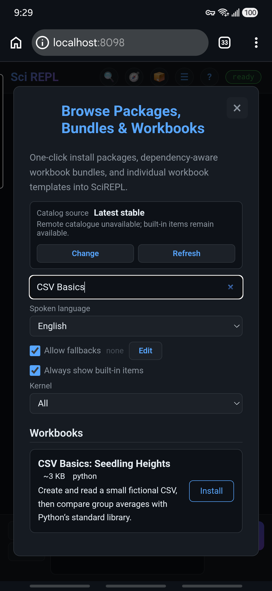
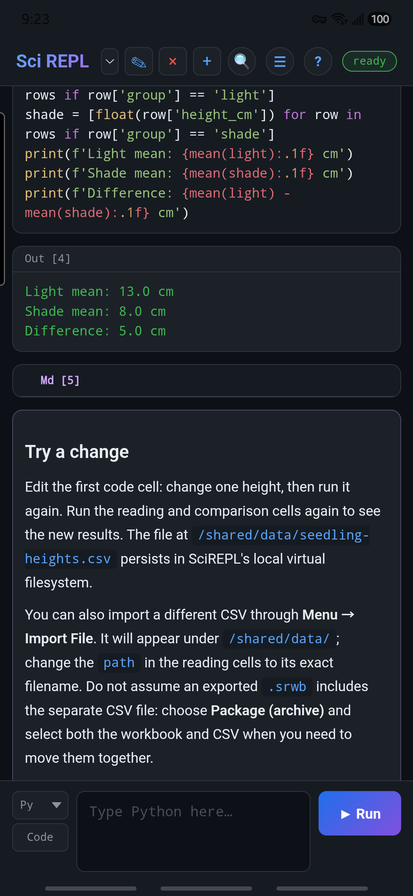
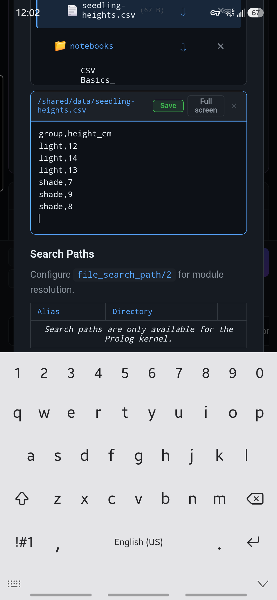
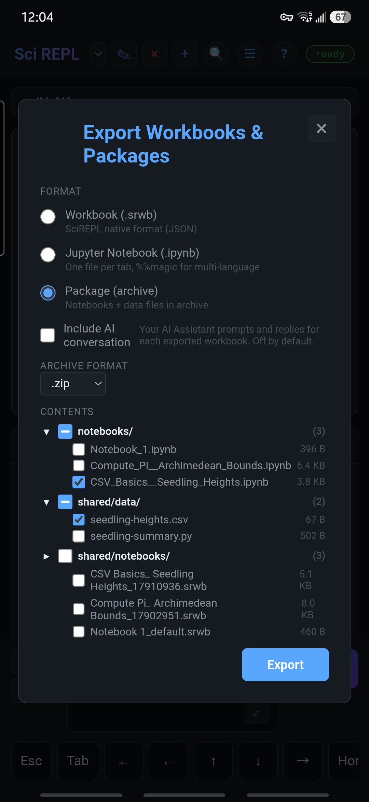
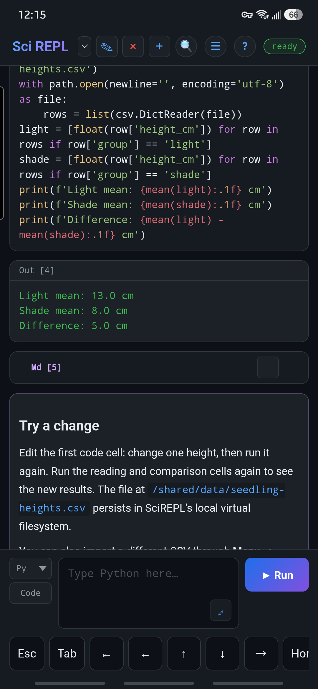

Apprendre par la pratique
Explorer un CSV dans un classeur
Commencez dans Parcourir paquets, collections et classeurs. Installez un petit exemple, exécutez ses cellules, modifiez son CSV, puis exportez et rouvrez le classeur avec ses données. Les données sont fictives et le code Python ne nécessite aucun paquet supplémentaire ni compte d'IA.
Les captures d'écran ont été prises sur un téléphone de la série Samsung Galaxy S24. Les images de Parcourir et de sortie initiale montrent Free ; les nouvelles images de l'éditeur de fichiers et de sélection de paquets montrent Pro 1.4.0 et sont identifiées ci-dessous. Dans Pro, vous pouvez utiliser le téléchargement direct du classeur et le chemin Importer un fichier ; les commandes environnantes peuvent différer, et cette nouvelle entrée Parcourir peut ne pas y être présente.
Vous ne voyez pas encore ce classeur dans Parcourir ? L'exemple est intégré à Free 1.4.0 et versions ultérieures ; une application installée plus ancienne ou une PWA en cache peut ne pas le répertorier. Téléchargez directement le classeur, puis utilisez Menu → Importer un fichier pour l'ouvrir. Vous pouvez maintenant suivre le reste de cette leçon.
Étape 1
Trouver le classeur dans Parcourir
- Ouvrez Menu → Parcourir paquets, collections et classeurs. Le raccourci d'en-tête facultatif 📦 ouvre le même écran s'il est visible.
- Recherchez CSV Basics. Sous Classeurs, trouvez CSV Basics: Seedling Heights. Il s'agit d'un exemple intégré en anglais, et non d'un paquet à installer dans Python.
- Appuyez sur Installer. Le classeur devient normalement l'onglet sélectionné. Si vous avez désactivé le basculement automatique, utilisez le sélecteur de classeur pour le choisir.

Si une politique de confidentialité apparaît : Parcourir peut vérifier le catalogue vérifié en ligne. Lisez l'avis, faites défiler à l'intérieur de la boîte de dialogue jusqu'en bas, puis appuyez sur Je comprends uniquement si vous acceptez. Vous pouvez plutôt fermer la notification et continuer à utiliser les entrées intégrées ; le catalogue distant sera indisponible. Cet exemple lui-même ne nécessite aucun jeu de données externe ni paquet Python.
L'installation d'un classeur ajoute ses cellules ; elle ne les exécute pas. Cela vous permet d'inspecter le code avant de l'exécuter.
Étape 2
Exécuter les cellules dans l'ordre
Le texte d'introduction explique l'exemple. Les trois cellules Python ont chacune un nom : create_csv, read_csv et compare_groups. Pour une cellule enregistrée, appuyez sur son ✎ crayon pour ouvrir l'éditeur, puis appuyez sur le Exécuter de cette cellule. Dans Pro, vous pouvez aussi appuyer deux fois sur le code de la cellule pour le modifier.
- Exécutez
create_csv. Cela écrit six lignes fictives dans/shared/data/seedling-heights.csv. Vous devriez voirSaved 6 fictional rows. - Exécutez
read_csv. Cela ouvre le fichier qui vient d'être créé et affiche les six lignes. - Exécutez
compare_groups. Cela affiche une moyenne à la lumière de 13.0 cm, une moyenne à l'ombre de 8.0 cm et une différence de 5.0 cm.
Le fichier est également visible dans Menu → Fichiers et stockage. Vous pouvez le lire à cet endroit, ou utiliser Modifier et Enregistrer pour le modifier directement. L'étape suivante montre comment procéder.
Le résultat final devrait ressembler à ceci :
Light mean: 13.0 cm
Shade mean: 8.0 cm
Difference: 5.0 cmPremier lancement plus lent ? Python peut prendre un instant pour s'initialiser. Attendez que le badge d'état indique prêt avant d'évaluer si une cellule a terminé. Les cellules suivantes réutilisent normalement l'environnement d'exécution chargé. Si le téléchargement d'un environnement d'exécution nécessite un consentement, lisez l'avis de confidentialité avant d'accepter ; ce classeur n'appelle pas %pip install.

Ces valeurs fictives illustrent la lecture et le calcul, et non une conclusion scientifique sur la lumière et la croissance des plantes.
Étape 3
Modifier une valeur et réexécuter
Vous n'avez pas besoin de modifier la cellule Python pour changer ses données. Ouvrez le CSV lui-même :
- Choisissez Menu → Fichiers et stockage (le menu peut ajouter VFS / Paths au nom).
- Choisissez / (Stockage persistant) ou Tous les systèmes de fichiers. Faites défiler jusqu'à
/shared/data/seedling-heights.csvet appuyez sur le nom du fichier, pas sur son icône de téléchargement ou de suppression. - Appuyez sur Modifier. Modifiez la ligne
light,14enlight,15. Conservez l'en-têtegroup,height_cm, les virgules et les autres lignes sans modification. - Appuyez sur Enregistrer, puis fermez Files & Storage. L'enregistrement d'un fichier n'exécute aucun code.


Réexécutez uniquement read_csv et compare_groups. La moyenne à la lumière est désormais d'environ 13.3 cm et la différence d'environ 5.3 cm. Ne réexécutez pas create_csv : cela écraserait la modification de votre fichier avec les valeurs toujours présentes dans cette cellule.
Sinon, modifiez create_csv avec son ✎ crayon, changez sa mesure de 14 en 15 et exécutez les trois cellules Python dans l'ordre. Cela modifie le code qui génère le fichier, plutôt que seulement le fichier.
Pourquoi réexécuter les cellules suivantes ? Leur sortie enregistrée constitue un historique de l'exécution précédente ; la modification d'un fichier ne recalcule pas automatiquement les résultats antérieurs. Chaque cellule lit le fichier lorsque vous l'exécutez.
Étape 4
Importer le CSV d'origine
- Téléchargez l'échantillon CSV d'origine (Page de référence en anglais) dans un dossier que le sélecteur de fichiers de votre appareil peut ouvrir.
- Dans SciREPL, choisissez Menu → Importer un fichier et sélectionnez
seedling-heights.csv. La confirmation doit indiquer qu'il a été téléversé dans/shared/data/seedling-heights.csv. - Cela remplace le fichier local modifié par les six lignes d'origine. Réexécutez
read_csvetcompare_groups; les deux moyennes devraient revenir à 13.0 et 8.0 cm.
Important : Ne réexécutez pas create_csv après avoir importé un fichier différent portant le même nom, sauf si vous avez l'intention de l'écraser. Pour votre propre CSV, notez le chemin de confirmation exact et remplacez path dans les cellules de lecture par ce nom de fichier. Le sélecteur de fichiers peut afficher les téléchargements Android, un fournisseur cloud ou les deux.
Étape 5
Enregistrer une copie portable
Ouvrez Menu → Exporter classeurs et paquets. Si vous ne souhaitez conserver que les cellules, choisissez Classeur (.srwb) et Onglet actif uniquement. Un .srwb n'inclut pas le CSV distinct dans SharedVFS.
Pour déplacer le classeur avec ses données, choisissez Paquet (archive) et conservez .zip. Dans l'arborescence Contenu, sélectionnez :
- Le classeur
CSV_Basics__Seedling_Heights.ipynbsous notebooks/. L'exportation de package enregistre les cellules au format de carnet Jupyter. - Le fichier
seedling-heights.csvsous shared/data/.
Décochez les classeurs et les fichiers non pertinents. Développez les dossiers à l'aide de leur flèche si nécessaire ; ne partez pas du principe que Onglet actif uniquement limite le contenu d'un package. Vous n'avez pas besoin des copies supplémentaires dans shared/notebooks/ pour cette leçon. Dans Pro, laissez Inclure la conversation IA décoché, sauf si vous souhaitez délibérément le partager.
Appuyez sur Exporter. Sur Android, cela ouvre la feuille de partage : enregistrez l'archive dans un emplacement facile à retrouver, par exemple votre propre disque ou la destination d'enregistrement d'un gestionnaire de fichiers. Dans un navigateur, cela télécharge un fichier. Le nom de fichier suggéré est scirepl_package.zip ; le renommer en seedling-project.zip facilite sa reconnaissance.

La récupération locale n'est pas une sauvegarde. Le stockage d'applications Android, la PWA dans Chrome et un autre navigateur ne partagent pas automatiquement ces fichiers. Conservez la copie exportée dans un emplacement que vous contrôlez. Consultez Fichiers, importation et exportation (Page de référence en anglais) pour d'autres formats.
Étape 6
Rouvrez le paquet et vérifiez les deux parties
Avant de faire confiance à une sauvegarde, vérifiez que vous pouvez l'ouvrir. Vous pouvez effectuer cette vérification dans une autre installation de SciREPL ou dans un autre profil de navigateur. L'importation ajoute ici un autre classeur ; elle remplace également les fichiers aux chemins de destination du paquet, conservez donc une copie distincte de tout fichier plus récent avant d'importer un paquet plus ancien.
- Choisissez Menu → Importer un paquet (.zip / .tar.gz) et sélectionnez l'archive que vous avez enregistrée. Pour cette leçon, il s'agit d'un
.zip, et non du téléchargement séparé CSV ou.srwb. - Choisissez le classeur nouvellement importé CSV Basics: Seedling Heights s'il n'est pas sélectionné automatiquement. Si vous avez effectué l'importation dans la même application, l'ancien et le nouvel onglet peuvent porter le même nom.
- Ouvrez Menu → Fichiers et stockage et vérifiez
/shared/data/seedling-heights.csv. Ses six lignes doivent correspondre au fichier que vous avez exporté. Fermez l'aperçu après vérification. - Exécutez la deuxième cellule Python (le code
read_csv), puis la troisième cellule Python (le codecompare_groups). L'exportation de paquets utilise le format Jupyter et peut ne pas conserver les noms des cellules ; identifiez-les d'après leur ordre et leur code. Après l'étape 4 et son CSV d'origine, attendez-vous à 13.0 cm, 8.0 cm et 5.0 cm. Si vous avez plutôt exporté le fichierlight,15modifié, attendez-vous à 13.3 cm, 8.0 cm et 5.3 cm.
Ne réexécutez pas create_csv pour cette vérification de restauration. Cela écrase les données importées avec les valeurs de son code. Lire d'abord le CSV restauré prouve que les données ont voyagé avec le classeur ; une ancienne sortie enregistrée seule ne le prouve pas.

Si le fichier est manquant ou si le classeur est absent, revenez à l'étape 5 et vérifiez que les deux entrées étaient bien sélectionnées. Une simple exportation de classeur ne peut pas transporter le CSV pour vous.
Et maintenant ?
Essayez avec votre propre CSV. Conservez les colonnes group et height_cm, utilisez des hauteurs numériques et incluez au moins une ligne light et une ligne shade—ou adaptez les deux filtres de groupe dans compare_groups. Vous pouvez inspecter le fichier local sous Menu → Fichiers et stockage. Pour les commandes sur téléphone utilisées ici, consultez le guide de l'interface du premier classeur.